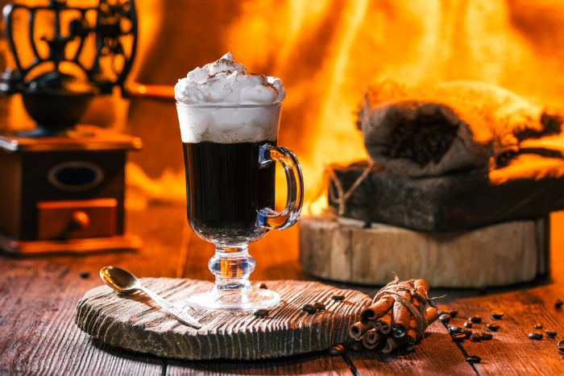

Olá compatriota, aqui vamos apresentar diversos drinks de bebidas.
A origem da bebida
De certo modo, é interresante pensar que não a nada
melhor
que beber uma caninha de vez em quando não é mesmo?
Aqui vamos lhe apresentar
algumas das melhores misturas para se fazer em festas ou em encontros sociais.
By yamotoz,
from you 21/09/23
Sumário
- Whisky
Old Fashionedirish coffeeladdie cosmoRob RoyManhattanpineapple bourbon lemonade
Old Fashionedirish coffeeladdie cosmoRob RoyManhattanpineapple bourbon lemonade
Whisky

Historia do Whisky
A história do whisky é fascinante e remonta a centenas de anos. Originalmente, sua criação é atribuída aos monges irlandeses e escoceses durante a Idade Média, que destilavam álcool a partir de grãos para uso medicinal e espiritual. No entanto, o whisky como o conhecemos hoje começou a tomar forma na Escócia no século XVIII, quando a destilação se tornou mais refinada.
O Scotch whisky (uísque escocês) ganhou destaque no século XIX, com a introdução de técnicas de envelhecimento em barris de carvalho, que adicionaram complexidade e sabor à bebida. Ao mesmo tempo, o whisky irlandês também estava prosperando.
No início do século XX, a Lei Seca nos Estados Unidos impulsionou a produção ilegal de whisky (conhecido como "moonshine"), enquanto o uísque canadense começou a ganhar renome internacional.
Após o fim da Lei Seca em 1933, a indústria de whisky nos EUA cresceu rapidamente, com a popularidade do bourbon e do rye. O uísque escocês continuou a evoluir, com variedades como single malts e blended whiskies.
Hoje, o whisky é uma bebida globalmente apreciada, com diferentes estilos, regiões de produção e tradições. Escócia, Irlanda, Estados Unidos, Canadá e Japão são conhecidos por suas destilarias e estilos únicos de whisky. A apreciação do whisky tornou-se uma experiência sensorial, com degustações, encontros de entusiastas e a busca por sabores e aromas complexos. A história do whisky é uma jornada de evolução, tradição e paixão pela destilação e pelo envelhecimento do líquido dourado em barris de carvalho.
Drinks with Whisky
Old Fashioned

O Old Fashioned é um coquetel clássico, conhecido por sua simplicidade e elegância.
Ele é feito com uísque, açúcar, angostura bitters e gelo, geralmente decorado com uma casca de laranja ou cereja.
É um dos coquetéis mais antigos, datando do século XIX, e é apreciado por sua combinação equilibrada de sabores e pela ênfase no sabor puro do uísque.
É um ícone da coquetelaria e continua a ser um favorito entre os apreciadores de uísque em todo o mundo.
Para se fazer esse incrivel drinks precisaremos dos seguintes ingredientes.
ingredientes:
-60 ml de uísque (bourbon ou rye são comuns)
-1 cubo de açúcar ou 1 colher de chá de açúcar
-2 dashes de Angostura bitters
-1 casca de laranja ou limão (para finalizar)
Para prepararmos esse incrivel drink precisaremos dos seguintes passos.
1-Coloque o cubo de açúcar em um copo Old Fashioned ou copo de uísque.
2-Adicione os dashes de Angostura bitters sobre o açúcar.
3-Adicione um pouco de água ao copo (aproximadamente uma colher de chá)
e misture para dissolver o açúcar e os bitters. Você pode usar uma colher de mistura para isso.
4-Encha o copo com gelo.
5-Despeje lentamente o uísque sobre o gelo.
Mexa suavemente para incorporar os ingredientes.
6-Finalize o coquetel com uma casca de laranja ou limão.
Você pode torcer a casca sobre o copo para liberar seus óleos aromáticos
e passá-la pelas bordas do copo antes de colocá-la como guarnição.
Pronto, seu Old Fashioned está pronto para ser apreciado!
Lembre-se de que muitos apreciadores preferem ajustar a quantidade
de açúcar e bitters de acordo com suas preferências pessoais,
então sinta-se à vontade para adaptar a receita ao seu gosto.
Irish Coffee
O Irish Coffee é um coquetel clássico que combina uísque irlandês, café quente, açúcar e creme batido. Foi criado na década de 1940 pelo chef Joe Sheridan,
no aeroporto de Foynes, na Irlanda, como uma bebida para aquecer os passageiros que chegavam em um voo atrasado.
O coquetel ganhou fama e logo foi servido no Buena Vista Cafe, em San Francisco,
popularizando-se nos Estados Unidos. Hoje, o Irish Coffee é uma bebida reconhecida internacionalmente,
apreciada por sua combinação única de sabores quentes e alcoólicos.
Os ingredientes para esse belissimo drinks são:
-45 ml de uísque irlandês -150 ml de café quente (preferencialmente forte) -2 colheres de chá de açúcar (ou a gosto) -Creme de leite fresco (não adoçado)
Para prepararmos esse incrivel drink precisaremos dos seguintes passos.
1-Prepare o café forte e reserve-o em uma xícara aquecida.
2-Em uma colher longa, adicione o açúcar ao café quente e mexa até
dissolver completamente.
A quantidade de açúcar pode ser ajustada ao seu gosto.
3-Adicione o uísque irlandês ao café açucarado e misture bem.
4-Com uma colher,
cuidadosamente coloque uma
camada de creme de leite fresco sobre a parte superior do café.
O creme deve ser derramado suavemente sobre as costas da colher,
para que ele flutue no topo do café.
5-Não mexa o creme com o café; ele deve formar uma camada separada.
6-Se preferir, você pode decorar com raspas de
chocolate ou uma pitada de cacau em pó por cima do creme.
Agora, seu Irish Coffee está pronto para ser apreciado.
Certifique-se de beber através do creme para saborear a combinação
deliciosa de café quente,
uísque irlandês e o contraste do creme suave.
Aproveite!
Laddie Cosmo

2-Em uma colher longa, adicione o açúcar ao café quente e mexa até
dissolver completamente. A quantidade de açúcar pode ser ajustada ao seu gosto.
3-Adicione o uísque irlandês ao café açucarado e misture bem.
4-Com uma colher, cuidadosamente coloque uma
camada de creme de leite fresco sobre a parte superior do café. O creme deve ser derramado suavemente sobre as costas da colher, para que ele flutue no topo do café.
5-Não mexa o creme com o café; ele deve formar uma camada separada.
6-Se preferir, você pode decorar com raspas de chocolate ou uma pitada de cacau em pó por cima do creme.
Agora, seu Irish Coffee está pronto para ser apreciado. Certifique-se de beber através do creme para saborear a combinação
deliciosa de café quente, uísque irlandês e o contraste do creme suave. Aproveite!
O Laddie Cosmo é uma variação do clássico Cosmopolitan que se tornou popular em meados dos anos 2000.
Foi criado na destilaria Bruichladdich, em Islay, Escócia, usando seu uísque single malt, conhecido por sabores defumados.
A adição de suco de cranberry e Cointreau ao uísque cria um equilíbrio único entre doçura e defumação.
O coquetel homenageia a tradição escocesa enquanto adiciona um toque moderno à coquetelaria.